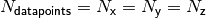

orbkit’s Low-Level Interface¶
This section is addressed to more advanced users, who want to use the modules of orbkit in their own programs.
Please refer to the Function Reference to get information about all modules and functions available.
Hint
Complete examples of using orbkit’s modules can be found in orbkit/examples, e.g., use_as_module.py and calculate_derivatives.py)
The tutorials Tutorial for the Integration with Cubature and Tutorial for Processing Multiple Input Files show further practical applications.
Table of Contents:
Reading QC Input¶
All reading processes are handled by the module orbkit.read, i.e.:
from orbkit import read
Here, you have one function for each quantum chemistry input type converting the input to the QCinfo class (cf. Central Variables). These functions are managed by:
qc = read.main_read(filename,itype='molden',all_mo=False,**kwargs)
Besides choosing the filename and the input type, you can specify, if the function should read the occupied and the virtual molecular orbitals (all_mo). Moreover, read.main_read forwards all additional keyword arguments (**kwargs) to the specific reading function, e.g., you can disable the interactive mode in read.read_molden.
Hint
The main computational functions are not restricted to the QCinfo class. They also accept dictionaries having the same members.
You can convert the QCinfo class to a dictionaries containing only the essential members by:
qc_dict = qc.todict()
Initializing the Grid¶
The orbkit.grid module organizes all grid related features of orbkit, of which some will be discussed in this section.
If you want to initialize a standard regular (vector) grid you have to set the grid parameters which are global values within this module:
from orbkit import grid
grid.min_ = [-8.0, -8.0, -8.0] #: Specifies minimum grid values (regular grid).
grid.max_ = [ 8.0, 8.0, 8.0] #: Specifies maximum grid values (regular grid).
grid.N_ = [ 101, 101, 101] #: Specifies the number of grid points (regular grid).
Now, you can initialize the grid:
grid.grid_init(is_vector=False, force=False)
To invoke the creation of a vector grid, i.e.,  (see Grid Related Options (Usage via the Terminal)), the variable is_vector has to set to True. If you want to change the grid, e.g., for a subsequent calculation, you have to either set:
grid.is_initialized=False
or call:
grid.grid_init(force=True)
Hint
The current grid parameters can be displayed with:
print(grid.get_grid())
Another way to automatically setting the grid parameters according to the molecular geometry is by calling:
grid.adjust_to_geo(qc,extend=5.0,step=0.1)
Here, orbkit creates grid parameters (grid.min_, grid.max_, grid.N_) with a grid spacing of 0.1 a0 and the size of the molecule plus 5 a0 in each direction. After calling this function you have to initialize the grid using grid.grid_init().
The last way to initialize a grid is by setting the x, y, z coordinates manually:
import numpy
grid.x = numpy.linspace(-10,10,201)
grid.y = numpy.array([0],dtype=float)
grid.z = numpy.array([-1.0,1.1])
# We have already initialized a grid for orbkit:
grid.is_initialized = True
where x, y and z have to be one-dimensional numpy.array of type float (numpy.float64).
Attention
The last line is mandatory, i.e., we have to tell orbkit, that there is no need to initialize the grid.
Hint
For your convenience, if you have initialized a vector grid manually, you may also set the variable grid.is_vector = True. You can use this standard variable as input parameter in other orbkit functions.
Operations on the Grid¶
The module orbkit.grid has some more features. For instance, starting from a regular grid, you can always convert between regular and a vector grid:
from orbkit import grid
# Initialize the grid
grid.grid_init(is_vector=False, force=False)
# Convert the grid to a vector grid
grid.grid2vector()
print(grid.get_grid()) # Display the new grid parameters
# Convert it back to a regular grid
grid.vector2grid(*grid.N_)
# Display the new grid parameters
print(grid.get_grid()) # Display the new grid parameters
The same can be done for matrices of the specific shapes, e.g.:
import numpy
from orbkit import grid
# Initialize a vector grid
grid.grid_init(is_vector=True)
# Create an array of the same shape, i.e., Nx=Ny=Nz=shape(matrix)
matrix = numpy.arange(len(grid.x))
Nx, Ny, Nz = grid.N_
matrix = grid.matrix_vector2grid(matrix=matrix,Nx=Nx,Ny=Ny,Nz=Nz)
Computational Functions¶
All major computational processes are carried out by the module orbkit.core. The function rho_compute manages the computational tasks, slices the grid, and distributes the slices to the subprocesses:
from orbkit import core
data = core.rho_compute(qc,calc_mo=False,vector=None,drv=None,numproc=1)
If you set calc_mo=True, all molecular orbitals will be computed and returned. If you want to use a vector grid, the variable vector has to be set to an integer value specifying the number of grid points per subprocess.
Derivatives can be computed by changing the variable drv, e.g.,
drv=['x','zz','xy'] will invoke the computation of the first derivative
with respect to  , the second derivative with respect to
, the second derivative with respect to  , and the mixed
derivative
, and the mixed
derivative  .
.
If the number of processes (numproc) is smaller or equal one, no subprocesses will be started, i.e., orbkit uses only a single CPU. If you even want to omit the slicing of the grid, you can use:
data = core.rho_compute_no_slice(qc,calc_mo=False,is_vector=False,drv=None,
return_components=False,x=None,y=None,z=None)
Here, you can even return the atomic orbitals (and/or their derivatives) as well with return_components. Furthermore, you can specify the grid (x, y, z, and is_vector) without using the orbkit.grid module.
If you do not want to use those functions, you can go further to the function computing the atomic orbitals and the function combining these orbitals to molecular orbitals:
ao_list = core.ao_creator(geo_spec,ao_spec,ao_spherical=None,
is_vector=False,drv=None,
x=None,y=None,z=None)
mo_list = core.mo_creator(ao_list,mo_spec,mo_coeff=None,
is_vector=False,x=None,y=None,z=None)
Those functions use the only specific members of the QCinfo class. Again, you can specify the grid (x, y, z, and is_vector) without using the orbkit.grid module.
The function ao_creator computes the contracted atomic orbitals, with the function:
ao = core.l_creator(geo_spec,ao_spec,sel_ao,exp_list=None,coeff_list=None,
at_pos=None,is_vector=False,drv=None,
x=None,y=None,z=None)
It can be stressed that you can set all members of QCinfo manually. So in principle, you can set geo_spec=None and ao_spec=None.
The functionalities calc_mo and mo_set, i.e., the computation of selected molecular orbitals and the calculation of the density with a selected set of molecular orbitals, are handled by two functions of the module orbkit.extras:
mo_list, mo_info = extras.calc_mo(qc, fid_mo_list, drv=None, vector=None,
otype=None, ofid=None)
and:
data = extras.mo_set(qc, fid_mo_list, drv=None, laplacian=False, vector=None,
otype=None, ofid=None, return_all=True)
where fid_mo_list is a list molecular orbital labels, cf. Molecular Orbital Selection (High-Level Interface).
Output Functions¶
The output functionalities of orbkit are handled by the module orbkit.output.
In this module, there are functions for every output type. These functions are managed by:
output.main_output(data,geo_info,geo_spec,outputname='new',otype='h5',
drv=None,omit=[],is_vector=False,**kwargs)